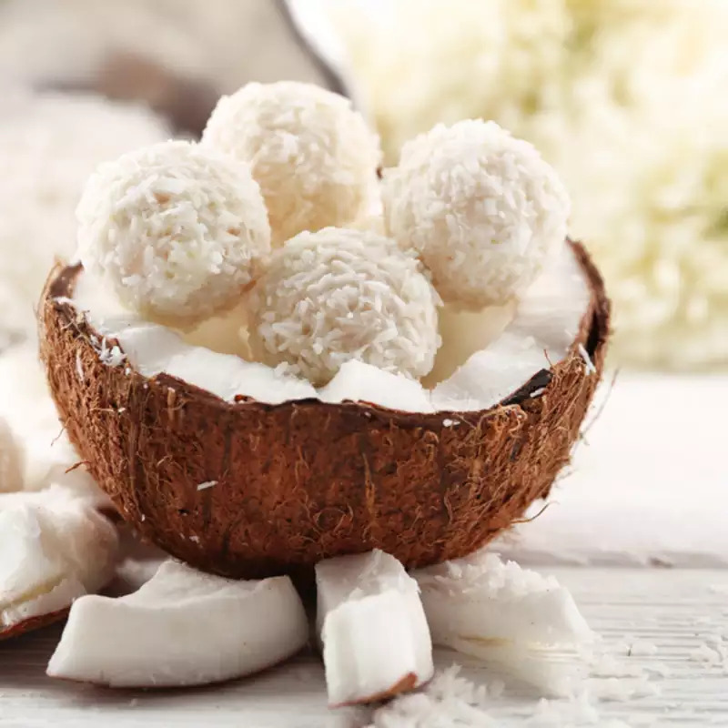

Coconut Balls

Description
Heavenly white sweet coconut balls made with condensed milk and milk powder.
It's easy and delicious and a healthy option when you're having those sweet tooth carvings.This dessert recipe is an interstin dish to serve on occasions like parties and festivals.
Ingredients
- 4 cups of grated coconut, dessicated
- ½ cup milk powder
- 1 tin condensed milk
- 1 tbsp ghee
- ½ tsp cardamom powder
- A few tbps of dessicated coconut to garnish
Steps
- Heat ½ tbsp ghee in a heavy bottomed vessel.
- Add coconut and saute for 4-5 minutes on low flame.
- Add ½ cup milk powder and mix. Turn off heat and cool.
- Grease you hand, make small coconut ladoo balls and roll in dessicated coconut.
- Tips: In an air tight container, place the balls in your fridge for longer shelf life. At room tempertature they stay fresh up to 2-3 days.